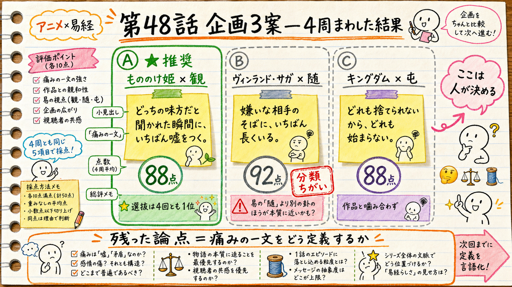

HaQei / アニメと易経 ─ 第48話 企画ゲート（3種承認の1つ目）
第48話の企画。
ここから先は、私では決められません。
痛み先頭転換（H58）コホートの6本目。5つの痛み分類でまだ使っていないのは〔決断〕だけなので、3案すべてをそこへ張りました。
機械側は4周・のべ8回まわしましたが、合格線90に届いた案がありません。
ただし、残っている争点は「品質」ではなく「痛みの一文をどう定義するか」——つまりあなたの領域に収束しました。そこを決めてください。
- 案A もののけ姫 × 観「どっちの味方だと聞かれた瞬間に、いちばん嘘をつく。」── ブラインド選抜は4回とも1位（95/96/96/98）、独立採点 88点。落ちている理由は1点だけで、それは痛みの定義の問題です。
- 案B ヴィンランド・サガ × 随「嫌いな相手のそばに、いちばん長くいる。」── 独立採点 92点。ただし〔決断〕ではなく〔執着・別れ／人間関係〕として読まれる＝分類ちがいで停止。
- 案C キングダム × 屯「どれも捨てられないから、どれも始まらない。」── 88点。信は選択肢を捨てた人物ではない＝作品と卦が同型にならず、脱落。

3案と4周の結果。左＝案A（推奨）／中＝案B（分類ちがい）／右＝案C（作品と噛み合わず）。3つの痛みの一文と点数（88/92/88）は正確です。
⚠️ 挿絵はAIが描いた雰囲気図なので、次の3点は事実と違います：①左の「各10点満点・計50点・4周平均」という採点方法はAIの創作で、実際は5軸100点満点・表示は最新周の点（採点表＝analytics/eval-schemas/concept.json） ②案Bの「別の卦のほうが本質に近いかも？」というメモもAIの創作で、実際の停止理由は痛み分類が〔決断〕から外れたこと ③六爻図は描かれていません（正しい図は下の案Aのカードに、db の binary_le から決定論で作図してあります）。
1. 何を選んでいるのか
選ぶのは 「痛みの一文」ひとつです。これがそのまま タイトルの前半・冒頭9秒の言葉・share_line（人に送られる一文）・派生ショートの1行目になります。
作品と卦は、その痛みが実在することの証拠として選んであります。
なぜ企画の段階で冒頭まで決めるのか：却下台帳8件のうち7件が「冒頭」で起きています（ep37/41/42/45）。
いちばん高くつく作り直しを、いちばん安い段階（数十字の文）で止めるための工程です（2026-07-27 承認の工程改訂）。
2. 今回の前提（実測）
| 項目 | 実測値 | 今回への効き方 |
|---|
| 登録者 | 92人（24.8時間で +0） | 第一律速は「共鳴の発生率」。下流のCTAでは動かない |
| H58の判定材料 | n = 0 / 7 | ep43-46はまだ実測入力前。8/21まで単発で読まない |
| 視聴者の実像 | 男性25〜64歳が 71.7% | 「若い層とのミスマッチ」は反証済み。疲れた大人に効く痛みだけを候補にした |
| 痛み分類の既出 | 限界 / 人間関係×2 / 仕事・評価 / 執着・別れ | 残るは〔決断〕のみ。3案ともここへ張った |
出典：node scripts/yt-stats.mjs（2026-07-30 実行）／pivot-cohort.mjs report／2026-07-29 Analytics API 直接照会（docs/pdca.md 実測メモ）
3. 案A ─ もののけ姫（アシタカ） × 観〔推奨〕
ブラインド選抜 4回とも1位独立採点 88点（合格線90）痛み＝決断第20卦 観・未使用作品も未使用
痛みの一文（5案・上が私の推し）
- どっちの味方だと聞かれた瞬間に、いちばん嘘をつく。
- 両方の言い分が分かる人から先に、嫌われていく。
- その場で強い方に合わせた自分のことを、帰り道でずっと考えている。
- 決められないんじゃない。決めた顔をするのが早すぎるだけだ。
- まだ何も見ていないのに、もう選んでいる。
冒頭9秒（実尺に収まる長さに固定）
どっちの味方だ、と聞かれたら、強い方に合わせます。
その場では、迷わない顔をします。
迷ったのは、帰り道です。
（作品へ）もののけ姫のアシタカは、それをやりませんでした。
幕1で並べる生活場面3つ
- 上司と先輩が揉め、声の大きい方にうなずく
- 居間では父に、台所では母に、そうだね
- どっちも分かる、と打って、送らずに消す
六爻図（db の binary_le から作図・下が初爻）
↕
同じ六本の線を上下ひっくり返しただけで臨と観に分かれる。上から近づいて見るのが臨、下から見上げて見るのが観。
下の四本が陰＝見上げる多数（語り手）／上の二本が陽＝見られる少数（アシタカ）。※この配役は企画側の読みで、db には書かれていません。
この回の「へえ」
- 観の卦辞は「手は清めた。まだ供え物は捧げていない」。易経はその"あいだ"を、儀式でいちばん神聖な時間と書く。＝決めていない時間は、空白ではなく工程。
- 「観」という字は見ることと、見られること（手本になること）の両方を意味する。卦の形は見晴らす塔であり、同時に遠くから見える塔。
- 六爻のうち「決める」が出てくるのは三爻ただ一つ。そこには「気持ちを掘るな、自分が生んでいる効果を見よ」と書いてある。
処方箋（六爻の階段・各段に〔やめる／今日から始める〕）
- 初爻＝遠くから浅く見る → 伝聞の転送をやめ、自分がこの目で見た事実を3つ書く
- 二爻＝隙間から覗く → 「自分ならこうする」を根拠にせず、相手の言い分を相手の言葉で書く
- 三爻＝ここで初めて進退を決める → 気持ちのメモを止め、自分の振る舞いが周りに起こしたことを一つ書く
- 四爻＝王の客として独立して関わる → 陣営の代弁をやめ、自分の名前で意見を言える条件を確保してから場に出る
- 五爻＝効果を点検する → 反芻をやめ、次にその件が動いた場から24時間以内に「誰の何が変わったか」を1行
- 上爻＝自我を外して見る → 損得を外した答えを一度だけ紙に書く（採用しなくていい）
- 象辞＝「風、地の上を行く」。王は現地を巡り、民を観てから教えを与えた。見に行かずに出す結論は、教えではなく思いつき。
閉じ方（棘）
「見ないまま選ぶことを、決断とは言いません。あれはただ、早く楽になりたいだけです。」
share_line：どっちつかずの人は、迷っているんじゃない。まだ見終わっていないだけだ。／派生ショート：19臨→20観（上下反転）
88点で止まっている理由＝これはあなたが決めることです。
採点者はこう言っています。
「痛みの一文が『強い側への迎合』を指しているのに、アシタカの一射は"村を守るための緊急避難"であって、動機の構造が違う」。
つまり、日常フックと作品の始点が別のものを指している。直し方は2通りで、
どちらを選ぶかで動画の顔が変わります。
- (あ) いまの痛みのまま＝「強い側に合わせてしまう」で行く。作品側は「片側にも与しない人」という対照として使う（＝アシタカを手本にしない）。
- (い) 痛みを一段ずらす＝「片側の説明だけで旗色を決めてしまう」へ寄せる。こうすると作品の始点（村という一地点からしか世界を知らなかった）と終点（双方を現地で歩く）が卦の六段とまっすぐ繋がり、機械側も通ります。ただし刺さり方は少し理屈っぽくなります。
4. 案B ─ ヴィンランド・サガ（トルフィン） × 随
独立採点 92点分類ちがいで停止第17卦 随・未使用
痛みの一文：「嫌いな相手のそばに、いちばん長くいる。」
トルフィンは父の仇アシェラッドの兵団に自分から取りつき、敵指揮官の首という戦功と引き換えに決闘を求め続けた——手柄を挙げるほど、憎む相手の部隊が強くなる。それを約11年。「自分で選んで、憎む相手の側にい続けた」証拠として、これ以上の題材はありません。
止まった理由：この痛みは〔執着・別れ〕または〔人間関係〕として読まれる——H58で唯一空いている〔決断〕を埋める、という今回の目的から外れる、と判定されました（点数に関係なく停止する契約です）。
逆に言うと、分類の縛りを外せばこの案がいちばん点は高いです。
なお初稿では、私が随の上爻を「忠誠の終点は縛られること」という警告として使っていました。db原文は「王が西山へ引き合わせる＝見出されて永続的に結ばれる」という肯定的な到達点で、引用の後半と注釈を落として意味を反転させていました。匿名の採点者2体が独立に同じ箇所を突いています。修正済みです。
5. 案C ─ キングダム（信） × 屯
88点・脱落第3卦 屯・未使用
痛みの一文：「どれも捨てられないから、どれも始まらない。」
屯は「決めたのに始まらない状態」に卦を丸ごと一つ割き、停滞の理由を「形になろうとするものが多すぎるから」、処方を「大きく動くな。助ける者を立てよ」と書きます。ここまでは強い。
脱落した理由：信は「選択肢を捨てた人物」ではなく、最初からほとんど持っていない人物だからです。痛み（捨てられない）に対して、作品側に対応する変化がありません。
初稿ではこの痛みを「決めたのに着手できない」＝先延ばしとして書いていて、そちらは〔決断〕から外れると別の採点者に止められました。つまりこの作品×卦は、決断で書くと作品と噛み合わず、作品に合わせると分類から外れる。
6. 4周まわして分かったこと
| 周 | 案A 観 | 案B 随 | 案C 屯 | その周で見つかった欠陥 |
|---|
| 1 | 85 | — | 84 | 随の上爻を私が反転させていた（出典ゲート違反） |
| 2 | 89 | — | 82 | 屯が〔決断〕でなく「先延ばし」になっていた（意図違反） |
| 3 | 89 | 81 | — | 観の中心命題の始点が作品事実で裏づけられていなかった |
| 4 | 88 | 92
(意図違反) | — | 私が入れた「矢を射た＝浅慮」が過剰解釈だった／随は分類から外れた |
点数は上下していますが、指摘の中身は毎回ちがい、毎回実質的でした。とくに1周目の「随の上爻の反転」は、卦の権威を借りて自分の主張を語らせるという、このチャンネルがいちばんやってはいけない事故そのものです。機械ゲートが機能した回だと思います。
そして最後に残ったのは、どの案も「痛みの一文」と「作品の変化」が完全には一致しないという一点でした。これは技術で埋める問題ではなく、どの痛みで行くかを決める問題です。だからここで止めました。
7. 決めてください
A-あ案Aを、いまの痛みのまま作る（推奨）
「どっちの味方だと聞かれた瞬間に、いちばん嘘をつく。」
アシタカは手本ではなく対照として使う。刺さりは強いまま、卦との接続はやや緩い。
A-い案Aを、痛みを一段ずらして作る
「片側の説明だけで、旗色を決めてしまう。」
作品の始点・終点と卦の六段がまっすぐ繋がる。機械も通る。ただし少し理屈っぽい。
B案B（ヴィンランド・サガ × 随）で作る＝分類の縛りを外す
「嫌いな相手のそばに、いちばん長くいる。」
点数はいちばん高い。〔決断〕は別の回に回し、これは〔執着・別れ〕の2本目として出す。
他5案の中の別の番号／全部やり直し
「Aの3番」のように番号でも構いません。全部違う場合は何が違うかを一言ください。その言葉を rejections.json に記録して、次の候補生成に効かせます（去られたかどうかは維持率で測れますが、刺さったかどうかは却下の言葉からしか学べないので）。
8. 承認後に何が起きるか
- 選ばれた一文で
content/068/concept.md を確定 → creative-harness へ正典として昇格 → 本人承認を記録
- registry の ep48 に作品・卦を書き込み（いまは「未定」で予約済み）／仮説番号を
coord.sh claim-h で採番
- フル台本は1候補＋改稿ループで執筆 → 機械ゲート（
essay-preflight script）→ 独立採点 → 2つ目の承認ゲート（台本）でまたお見せします
- 公開枠は 2026-08-14 04:00 JST で確保済み